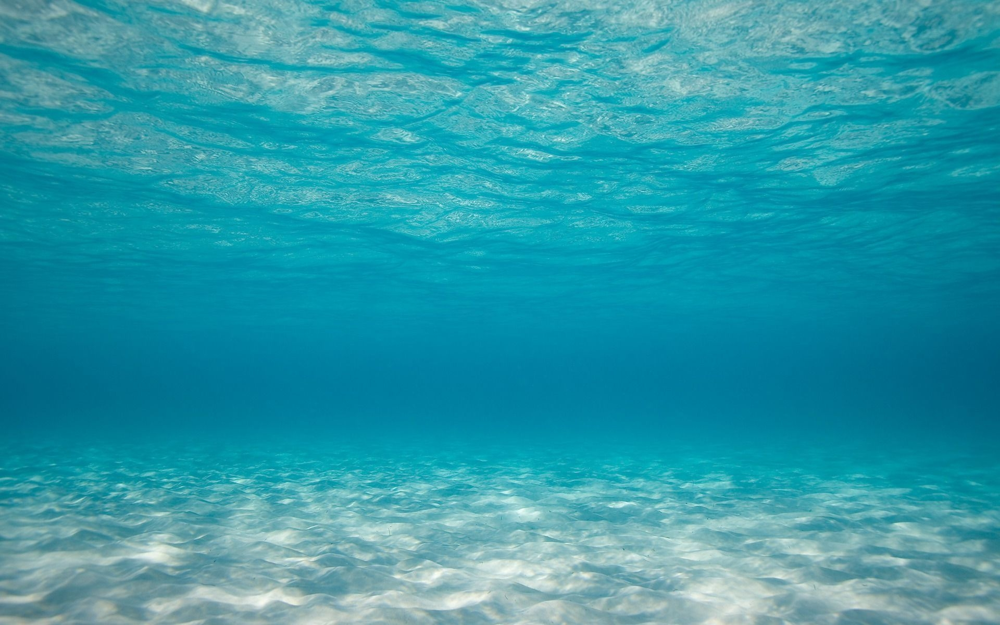
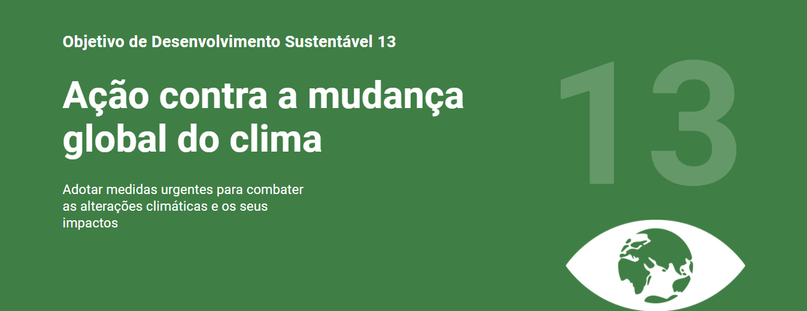

ODS-14
Objetivo 14: Conservação e uso sustentável dos oceanos, dos mares e dos recursos marinhos para o desenvolvimento sustentável.
O que é ODS?
ODS é a sigla para os Objetivos de Desenvolvimento Sustentável que fazem parte da chamada “Agenda 2030”. Trata-se de um pacto global assinado durante a Cúpula das Nações Unidas em 2015 pelos 193 países membros. A agenda é composta por 17 objetivos ambiciosos e interconectados, desdobrados em 169 metas, com foco em superar os principais desafios de desenvolvimento enfrentados por pessoas no Brasil e no mundo, promovendo o crescimento sustentável global até 2030.
ODS - 14


14.1
Objetivos
Até 2025, prevenir e reduzir significativamente a poluição marinha de todos os tipos, especialmente a advinda de atividades terrestres, incluindo detritos marinhos e a poluição por nutrientes.
14.2
Até 2020, gerir de forma sustentável e proteger os ecossistemas marinhos e costeiros para evitar impactos adversos significativos, inclusive por meio do reforço da sua capacidade de resiliência, e tomar medidas para a sua restauração, a fim de assegurar oceanos saudáveis e produtivos.
14.3
Minimizar e enfrentar os impactos da acidificação dos oceanos, inclusive por meio do reforço da cooperação científica em todos os níveis.
14.4
Até 2020, gerir de forma sustentável e proteger os ecossistemas marinhos e costeiros para evitar impactos adversos significativos, inclusive por meio do reforço da sua capacidade de resiliência, e tomar medidas para a sua restauração, a fim de assegurar oceanos saudáveis e produtivos
14.5
Até 2020, conservar pelo menos 10% das zonas costeiras e marinhas, de acordo com a legislação nacional e internacional, e com base na melhor informação científica disponível.
14.6
Até 2020, proibir certas formas de subsídios à pesca, que contribuem para a sobrecapacidade e a sobrepesca, e eliminar os subsídios que contribuam para a pesca ilegal, não reportada e não regulamentada, e abster-se de introduzir novos subsídios como estes, reconhecendo que o tratamento especial e diferenciado adequado e eficaz para os países em desenvolvimento e os países menos desenvolvidos deve ser parte integrante da negociação sobre subsídios à pesca da Organização Mundial do Comércio
14.7
Até 2025, prevenir e reduzir significativamente a poluição marinha de todos os tipos, especialmente a advinda de atividades terrestres, incluindo detritos marinhos e a poluição por nutrientes.
14.a
Aumentar o conhecimento científico, desenvolver capacidades de pesquisa e transferir tecnologia marinha, tendo em conta os critérios e orientações sobre a Transferência de Tecnologia Marinha da Comissão Oceanográfica Intergovernamental, a fim de melhorar a saúde dos oceanos e aumentar a contribuição da biodiversidade marinha para o desenvolvimento dos países em desenvolvimento, em particular os pequenos Estados insulares em desenvolvimento e os países menos desenvolvidos.
14.b
Proporcionar o acesso dos pescadores artesanais de pequena escala aos recursos marinhos e mercados.
14.c
Assegurar a conservação e o uso sustentável dos oceanos e seus recursos pela implementação do direito internacional, como refletido na UNCLOS [Convenção das Nações Unidas sobre o Direito do Mar], que provê o arcabouço legal para a conservação e utilização sustentável dos oceanos e dos seus recursos, conforme registrado no parágrafo 158 do “Futuro Que Queremos”.
Veja Támbem

ODS-14 (Clique para Acessar)

Todas ODS (Clique para Acessar)